🎸 Leo/need
Тема группы: дружба, одиночество, возвращение утраченной связи
⭐ Хосино Ити́ка (Hoshino Ichika)
Роль: гитара / вокал
История
Ичика — тихая и замкнутая девушка, которая в детстве была очень близка с остальными участницами группы. После болезненного разрыва дружбы она осталась одна, находя утешение в ночных прогулках и музыке.
Характер
* Спокойная, добрая
* Плохо выражает эмоции словами
* Очень искренняя
Развитие
Ичика учится не бояться делать первый шаг и снова открываться людям, постепенно становясь эмоциональным центром группы.
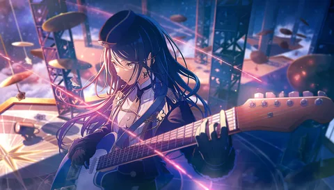
🥁 Тэнма Саки (Tenma Saki)
Роль: клавишные
История
В детстве Саки долго болела и была изолирована от сверстников. Музыка стала для неё символом «нормальной» жизни.
Характер
* Яркая, энергичная
* Боится одиночества
* Очень ценит друзей
Развитие
Саки учится жить настоящим и не скрывать страх снова потерять близких.

🥁 Хинамори Сихо (Hinamori Shiho)
Роль: бас
История
Сихо замкнулась после распада дружбы, решив сосредоточиться только на музыке.
Характер
* Строгая, резкая
* Перфекционист
* Заботливая, но скрывает это
Развитие
Она учится говорить о своих чувствах, а не отталкивать людей.
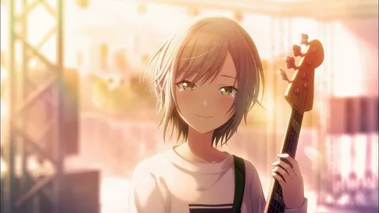
🎧 Мочизуки Хонами (Mochizuki Honami)
Роль: ударные
История
Хонами стала «удобным человеком», стараясь угодить всем после конфликта в группе.
Характер
* Мягкая
* Терпеливая
* Склонна винить себя
Развитие
Хонами осознаёт, что доброта без честности разрушает.
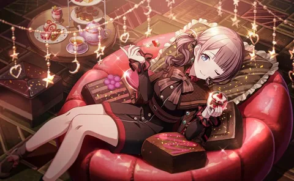
🌸 MORE MORE JUMP!
Тема: айдол-культура, мечты и давление ожиданий
🌟 Ханасаки Мину́ри (Hanasaki Minori)
Роль: айдол
История
Минори — обычная девушка без таланта, вдохновлённая айдолами.
Характер
* Оптимистка
* Упорная
* Не сдаётся
Развитие
Она доказывает, что страсть важнее врождённого таланта.
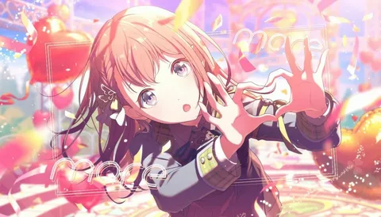
💙 Кири́тани Харука (Kiritani Haruka)
История
Бывшая популярная айдол, ушедшая из индустрии.
Характер
* Сдержанная
* Ответственная
Развитие
Учится выступать ради себя, а не фанатов.
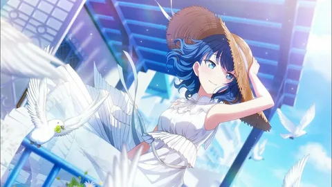
🌼 Момоти Айри (Momoi Airi)
История
Айдол, которая так и не достигла пика популярности.
Характер
* Прямая
* Эмоциональная
Развитие
Принимает свои неудачи как часть пути.

❄️ Хиномори Сидзуку (Hinomori Shizuku)
История
Айдол с «идеальным образом», скрывающим неуверенность.
Характер
* Спокойная
* Немного наивная
Развитие
Учится быть собой, а не образом.
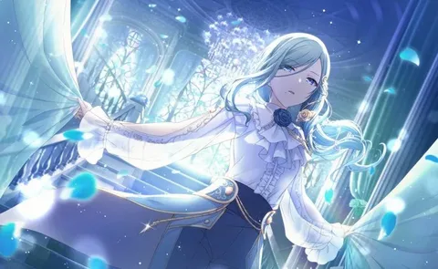
🎧 Vivid BAD SQUAD
Тема: самовыражение и преодоление границ
🔥 Адзуса Ана Шиномэ (Shinonome An)
История
Дочь легендарного уличного музыканта.
Характер
* Открытая
* Амбициозная
Развитие
Учится не сравнивать себя с прошлым.
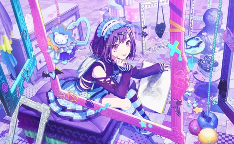
🎤 Аояги То́я (Aoyagi Toya)
История
Воспитывался в строгой музыкальной среде.
Характер
* Спокойный
* Замкнутый
Развитие
Находит собственный стиль.
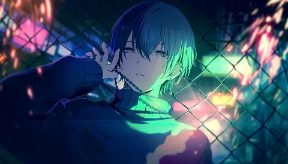
🎵 Шираиши Коха́нэ (Shiraishi Kohane)
История
Робкая девушка без сцены в прошлом.
Характер
* Скромная
* Добрая
Развитие
Постепенно становится уверенной вокалисткой.
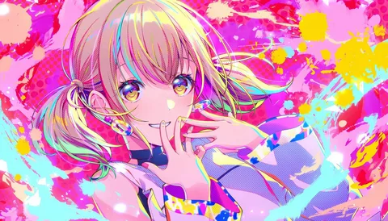
⚡ Синономэ Аки́то (Shinonome Akito)
История
Мечтает превзойти легенду RAD WEEKEND.
Характер
* Вспыльчивый
* Целеустремлённый
Развитие
Учится работать в команде.
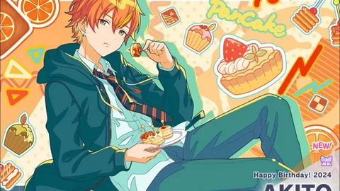
🎪 Wonderlands×Showtime
Тема: театр, смех и бегство от боли
🌟 Тэнма Цукаса (Tenma Tsukasa)
История
Мечтает стать звездой ради сестры.
Характер
* Громкий
* Харизматичный
Развитие
Понимает, что быть лидером — значит поддерживать.
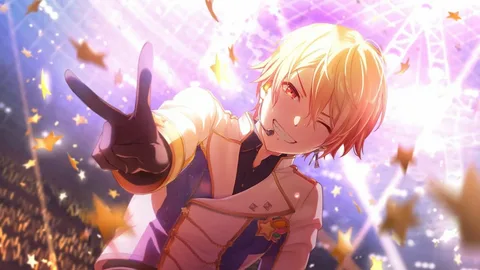
🤖 Отори Эму (Otori Emu)
История
Наследница парка аттракционов.
Характер
* Энергичная
* Искренняя
Развитие
Учится понимать чужую боль.
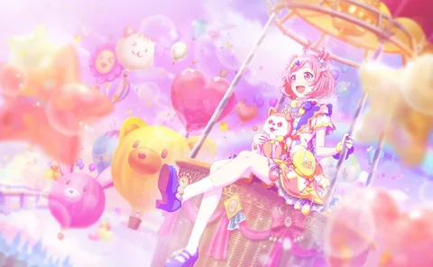
🎭 Камисиро Руи (Kamishiro Rui)
История
Гениальный, но непонятый режиссёр.
Характер
* Экцентричный
* Умный
Развитие
Учится доверять людям.

🎤 Кусанаги Нэнэ (Kusanagi Nene)
История
Социальная тревожность и страх сцены.
Характер
* Тихая
* Ранимая
Развитие
Медленно выходит из тени.
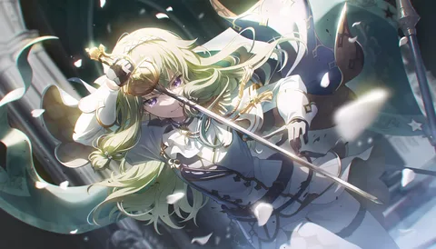
🌙 Nightcord at 25:00
Тема: психологическая боль и самопринятие
🌑 Ёйсаки Кана́дэ (Yoisaki Kanade)
История
Пишет музыку, чтобы «спасать» людей.
Характер
* Замкнутая
* Чуткая
Развитие
Учится ценить себя.
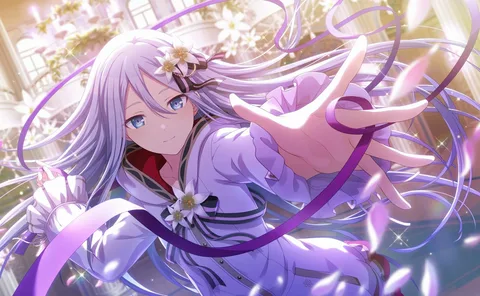
🕊 Аса́хина Мафу́ю (Asahina Mafuyu)
История
Живёт под давлением ожиданий матери.
Характер
* Холодная снаружи
* Потерянная внутри
Развитие
Ищет собственную личность.
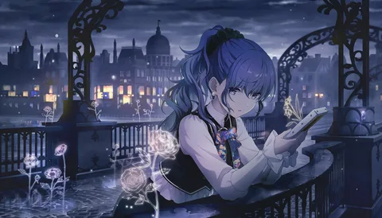
💻 Синономэ Эна (Shinonome Ena)
История
Художница, страдающая от непризнания.
Характер
* Резкая
* Эмоциональная
Развитие
Учится не измерять ценность лайками.
🎧 Акияма Мидзу́ки (Akiyama Mizuki)
История
Скрывает себя настоящего за образом.
Характер
* Игривый
* Наблюдательный
Развитие
Постепенно приближается к принятию себя.
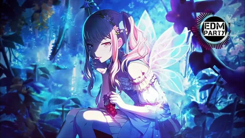